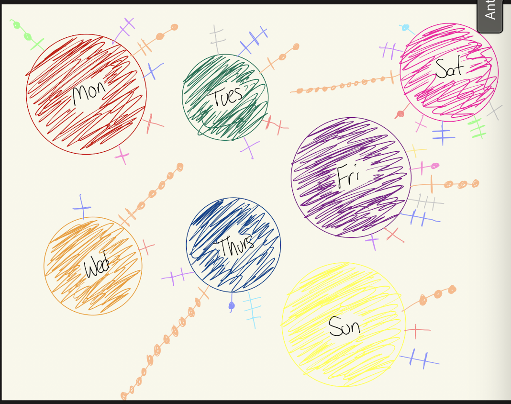

Dear Data is an innovative year-long endeavor by Giorgia Lupi and Stefanie Posavec,
two information designers separated by the Atlantic Ocean. Each week, they gathered
personal data and crafted hand-drawn visualizations on postcards, which they then
mailed to one another, establishing a distinctive method of "slow data" sharing.
Every postcard showcased a visual depiction of their weekly experiences, paired with
a key to aid the recipient in interpreting the artwork. This practice turned data
collection into a personal narrative, highlighting the importance of human
connection over mere efficiency. Their goal was to leverage data to cultivate deeper
relationships rather than just streamline life. Here is my version, I decided to
track my phone app catagories useage for a week.

Art 168 Projects
Class description : The Digital Medium course is an introductory studio class that
explores the computer as an artistic medium, rather than just a tool. It focuses on
creating art around specific themes and concepts, with each lesson building on the last.
The course covers a wide range of digital media, encouraging flexibility and
interdisciplinary collaboration. By the end, students will have an intermediate
understanding of digital art, demonstrated through their final portfolio. Here is a list
of all of my simple projects that I created with the knowledge I learned from the
course:
Project One
Project Two
Project Three
Photo Edits From Photo 100
Before and After Edits:
These are some before and after photos that I edited from personal photo album with
the skills that I learned from my Photo 100 course.
Pre edited photo of CashPost edited photo of Cash
This photo is of my cat cash. I wanted to be able to see cash more and have the
ablity to see his fur too. Along with capturing the color in cash's eyes.
Pre edited photo of JohnnyPost edited photo of Johnny
This photo is of my cat Johnny. I wanted to capture more of Johnny's orange fur and
have the ablity to see more of the dark browns in his eyes. Along with hopfully
being able to see more of his under colors.
Pre edited photo of Gavin with his trucksPost edited photo of Gavin with his trucks
My boyfriend and his two old square body chevy trucks. The black truck is a 1976 K5
chevy blazer, and the green truck is a 1979 K10 chevy cheyenne. My goal was to bring
out the colors more in both the trucks and the sunset. Along with to have the
ablility to see Gavin more between the trucks. I also wanted to sharpen the look of
the trucks to show the true square body truck.
Pre edited photo of Gavin with a beaverPost edited photo of Gavin with a beaver
Gavin is a taxiderist who is big into anything outdoorsy so he does trapping. Last
year he got this 50 pound beaver during beaver trapping season. Though with the
photo after I looked at it later I noticed how dark it was and that you really could
not see the beavers fur colors. So I went through to try and edit to brighten up the
overall picture and be able to see the fur of the beaver though wet but see its
other fur colors that you would see dry.
Marketing Work for by Boyfriend's Taxidermy Business (Schmoll's Taxidermy)
Schmoll's Taxidermy Poster
This is a poster I created for Gavin's Taxidermy business to promote his business
with the work he did in his taxidermy class. I will also be runnign his social
medias once he is fully ready to be open for business within the next month.
Schmoll's Taxidermy Business Card
This is a business I created for Gavin's Taxidermy business for his to get his
information out to people.
More Projects and Pictures are always in the works!